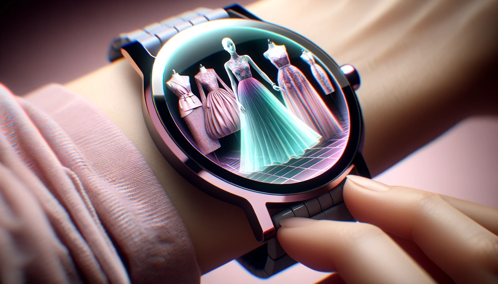
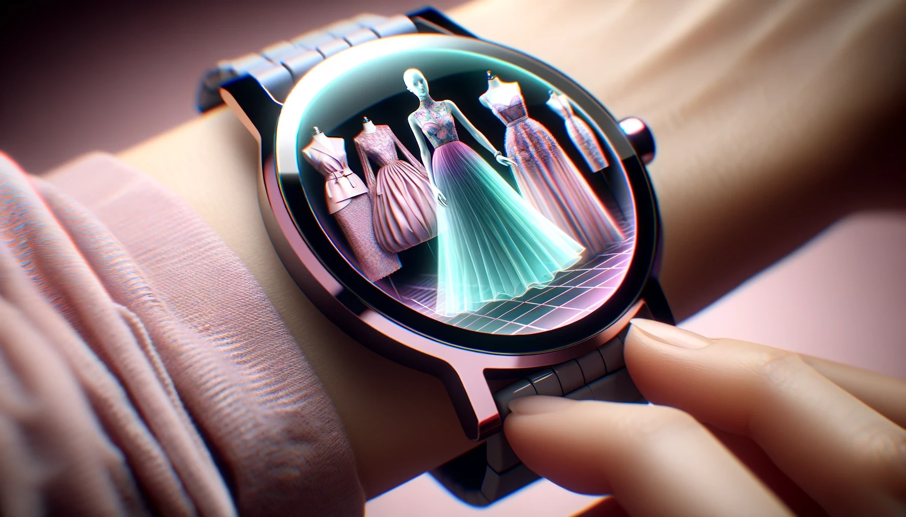

About this item
Questions
Reviews(14)
ZyGlon holographic smartwach: Navigate with a 3D interactive cityscape, with biometric tracking, and experience seamless connectivity with a powerful Quantum Processing Unit.
4.7
14 reviews
$24.95
Free delivery Friday, December 8 if you oder within 11 hrs 9 mins
Ships from Amazon
Sold by ZyGlon
Returns Returnable until Jan 31, 2055
Similar items to consider


 
